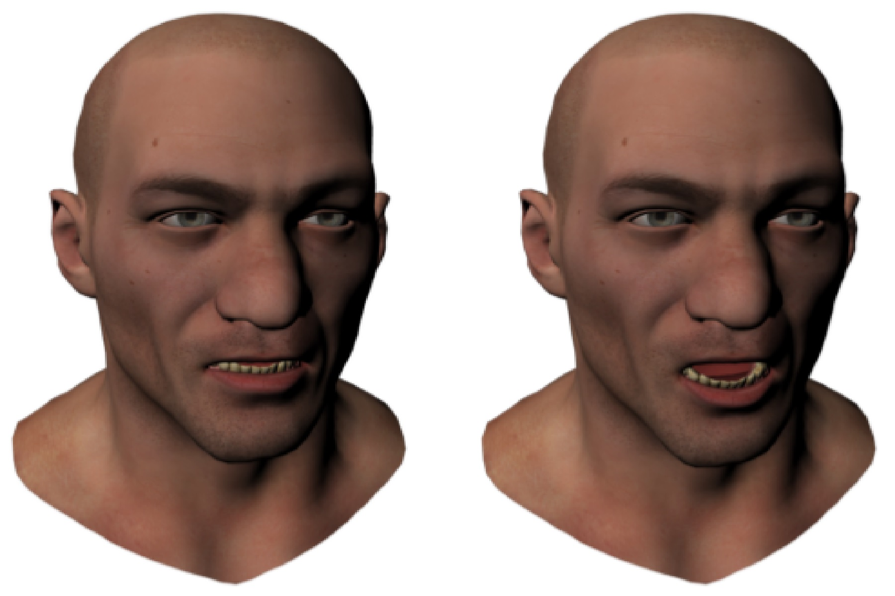
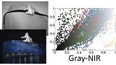
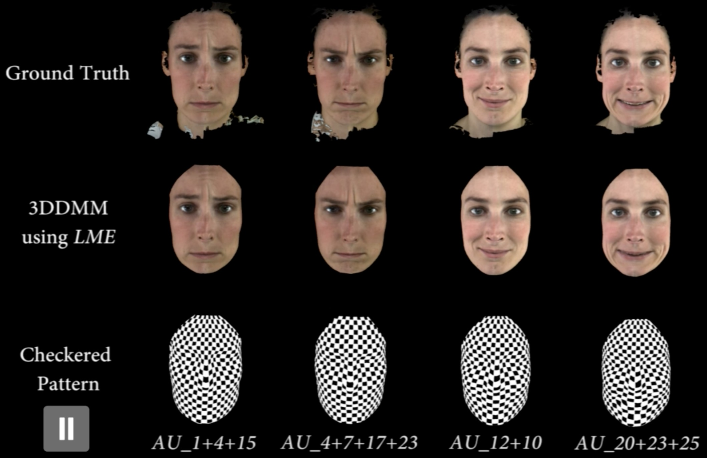
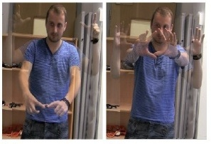
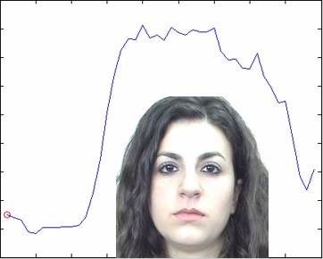
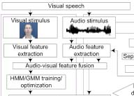
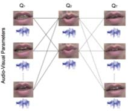

Funded Research Projects
(PI) 2019-2021: CAMERA Motion Capture Innovation Studio (£901,391) Horizon 2020
(PI) 2019-2022: A tool to reveal Individual Differences in Facial Perception (£402,113) Medical Research Council (MRC)
(PI) 2018-2020: Rheumatoid Arthritis Flare Profiler (£165,126, Total project value £663,290). Partners: Living With, NHS. InnovateUK
(Co-I) 2018-2022: Bristol and Bath Creative Cluster (~£4m). Partners: UWE, University of Bristol, Bath Spa University AHRC
(PI) 2017-2019: DOVE: Deformable Objects for Virtual Environments (£128,746, Total project value £562,559 FEC). Partner: Marshmallow Laser Feast, Heston's Fat Duck. Innovate UK
(PI) 2016-2018: HARPC: HMC for Augmented Reality Performance Capture (£119,025, Total project value £517,616 FEC). Partner: The Imaginarium. Innovate UK
(PI) 2015-2020: Centre for the Analysis of Motion, Entertainment Research and Applications - CAMERA (£ 4,998,728 FEC). Partners: The Imaginarium, The Foundry, Ministry of Defence, British Maratime Technologies, British Skeleton. EPSRC/AHRC. (not including partner contributions, ~£5,000,000).
(PI) 2015-2017: Biped to Animal (£108,109 FEC). Parter: The Imaginarium. Innovate UK.
(PI) 2015: Goal Oriented Real Time Intelligent Performance Retargeting (£29,997 FEC). Partner: The Imaginarium. Innovate UK.
(Co-I) 2013-2016: Acquiring Complete and Editable Outdoor Models from Video and Images (£1,003,256 FEC). EPSRC.
(PI-Bath) 2014-2017: Visual Image Interpretation in Man and Machine (VIIMM) (£121,030 FEC). Partner: University of Birmingham. EPSRC
(PI) 2012-2016: Next Generation Facial Capture and Animation (£100,887 FEC). Partner: Double Negative Visual Effects. The Royal Society Industry Fellowship.
(PI) 2007-2012: Exploiting 4D Data for Creating Next Generation Facial Modelling and Animation Techniques (£460,640FEC). The Royal Academy of Engineering Research Fellowship.
Other funding: PhD Studentships, EPSRC Innovation Acceleration Account (IAA), Nuffield Foundation.
Researchers and Engineers
Postdoctoral/Engineer
Martin Parsons (CAMERA); Nadejda Roubtsova (CAMERA); Murray Evans (CAMERA); Yiguo Qiao (Living With/RUH/InnovateUK)
PhD
Sinead Kearney; Maryam Naghizadeh; Eleanor Crellin; Jake Deane
EngD
Kyle Reed (Cubic Motion); Catherine Taylor (Marshmallow Laser Feast)
Alumni
Jose Serra (Industrial Light and Magic), Anamaria Ciucanu, Pedro Mendes, Shridhar Ravikumar (Amazon); Alastair Barber (The Foundry); Wenbin Li (UCL); Han Gong (UEA/Cambridge/Edinburgh/Apple); Charalampos Koniaris (Disney Research); Daniel Beale; Sinan Mutlu; Nicholas Swafford
Publications (Recent and Selected)
-

Unsupervised Attention-guided Image-to-Image Translation
Y. Alami Mejjati, C. Richardt, J. Tompkin, D. Cosker and K. I. Kim
Advances in Neural Information Processing Systems (NIPS), 2018
-

E-StopMotion: Digitizing Stop Motion for Enhanced Animation and Games
A. Ciucana, N. Bhandari, X. Wu, S. Ravikumar, Y. Yang and D. Cosker
ACM SIGGRAPH Conference on Motion Interaction and Games (MIG), 2018
-

A Review of the Evolution of Vision-based Motion Analysis and the Integration of Advanced Computer Vision Methods towards Developing a Markerless System
S. Colyer, M. Evans, D. Cosker and A. Salo
Sport Medicine, 2018
-

Foot Contact Timings and Step Length for Sprint Training
M. Evans, S. Colyer, D. Cosker and A. Salo
IEEE Winter Conference on Applications of Computer Vision (WACV), 2018
-

Multi-task Learning by Maximizing Statistical Dependence
Y. Alami Mejjati, D. Cosker and K. I. Kim
IEEE Conference on Computer Vision and Pattern Recognition (CVPR), 2018
-

Easy Generation of Facial Animation using Motion Graphs
J. Serra, O Cetinaslan, S. Ravikumar, V. Orvalho and D. Cosker
Computer Graphics Forum, 2018 (presented at EUROGRAPHICS 2018)
-

Learn to Model Blurry Motion via Directional Similarity and Filtering
W. Li, D. Chen, L. Zhihan, Y. Yan and D. Cosker
Pattern Recognition, 2018
-
User-Assisted Image Shadow Removal
Han Gong, Darren Cosker
Image and Vision Computing, 62, pp.19-27, 2017
-

Interactive Removal and Ground Truth for Difficult Shadow Scenes
-
Behavioural facial animation using motion graphs and mind maps
Jose Serra, Darren Cosker, Veronica Orvalho
ACM SIGGRAPH Conference on Motion Interaction and Games (MIG), 2016
-

Nonrigid Optical Flow Ground Truth for Real-World Scenes with Time-Varying Shading Effects
-

Dense Nonrigid Ground Truth for Optical Flow in Real-World Scenes
Wenbin Li, Darren Cosker, Zhihan Lv, Matthew Brown
IEEE Conference on Automation Science and Engineering (CASE), 2016
-

Camera Tracking in Visual Effects - An Industry Perspective of Structure from Motion
Alastair Barber, Darren Cosker, Oliver James, Ted Waine and Radhika Patel
-

User, Metric and Computational Evaluation of Foveated Rendering Methods
Nicholas T. Swafford, Jose A. Iglesias-Guitian, Charalampos Koniaris, Bochang Moon, Darren Cosker and Kenny Mitchell
-

Reading Between the Dots: Combining 3D Markers and FACS Classification for High-Quality Blendshape Facial Animation
Shridhar Ravikumar, Colin Davidson, Dimitri Kit, Neill Campbell, Luca Benedetti and Darren Cosker
-
Fitting Quadrics with a Bayesian Prior
Daniel Beale, Yong-Liang Yang, Neill Campbell, Darren Cosker and Peter Hall
-
Video Interpolation using Optical Flow and Laplacian Smoothness
-
Blur Robust Optical Flow using Motion Channel
-

Drift Robust Non-rigid Optical Flow Enhancement for Long Sequences
Wenbin Li, Darren Cosker, Matthew Brown
Journal of Intelligent and Fuzzy Systems, JIFS 2016, to appear
-
Facial Capture and Animation in Visual Effects
-

Inferring Changes in Intrinsic Parameters from Motion Blur
-

Latency aware foveated rendering in unreal engine 4
NT Swafford, D Cosker, K Mitchell
Proceedings of the 12th European Conference on Visual Media Production (CVMP), 2015
-

Real-time variable rigidity texture mapping
C Koniaris, K Mitchell, D Cosker
Proceedings of the 12th European Conference on Visual Media Production (CVMP), 2015
-

Perceived Emotionality of Linear and Non-Linear AUs Synthesised using a 3D Dynamic Morphable Facial Model
D Cosker, E Krumhuber, A Hilton
Facial Analysis and Animation/Audio Visual Speech Processing (FAAVSP), 2015
-
Estimating camera intrinsics from motion blur
A Barber, M Brown, P Hogbin, D Cosker
Proceedings of the 11th European Conference on Visual Media Production (CVMP), 2014
-

Dual sensor filtering for robust tracking of head-mounted displays
Nicholas T Swafford, Bastiaan J Boom, Kartic Subr, David Sinclair, Darren Cosker, Kenny Mitchell
-
Interactive Shadow Editing from Single Images
Asian Conference on Computer Vision (ACCV), Workshops, 243-252, 2014
-

Interactive shadow removal and ground truth for variable scene categories (BEST STUDENT PAPER PRIZE)
-
Survey of Texture Mapping Techniques for Representing and Rendering Volumetric Mesostructure
-

Robust optical flow estimation for continuous blurred scenes using rgb-motion imaging and directional filtering (BEST STUDENT PAPER PRIZE)
W Li, Y Chen, JH Lee, G Ren, D Cosker
IEEE Winter Conf. on Applications of Comp. Vis. (WACV),792-799, 2014
-
Real-time content-aware texturing for deformable surfaces
C Koniaris, D Cosker, X Yang, K Mitchell, I Matthews
Proceedings of the 10th European Conference on Visual Media Production (CVMP), 2013
-
Applications of face analysis and modeling in media production
D Cosker, P Eisert, O Grau, PJB Hancock, J McKinnell, EJ Ong
-
User-aided single image shadow removal
H Gong, D Cosker, C Li, M Brown
IEEE International Conference on Multimedia and Expo (ICME), 2013
-

Water surface modeling from a single viewpoint video
C Li, D Pickup, T Saunders, D Cosker, D Marshall, PS Hall, P Willis
IEEE Transactions onVisualization and Computer Graphics, 19 (7), 1242-1251, 2013
-

Optical flow estimation using laplacian mesh energy
W Li, D Cosker, M Brown, R Tang
IEEE Conference on Computer Vision and Pattern Recognition (CVPR), 2013
-
Content aware texture mapping on deformable surfaces
C Koniaris, D Cosker, X Yang, KJ Mitchell, I Matthews
US Patent App. 13/838,840

An anchor patch based optimization framework for reducing optical flow drift in long image sequences
-
Realtime video based water surface approximation
C Li, M Shaw, D Pickup, D Cosker, P Willis, P Hall
European Conference in Visual Media Production (CVMP), 109-117, 2011
-

A FACS valid 3D dynamic action unit database with applications to 3D dynamic morphable facial modeling
D Cosker, E Krumhuber, A Hilton
IEEE International Conference on Computer Vision (ICCV), 2296-2303, 2011.
-

Identifying and evaluating gestural interaction in ubiquitous and pervasive computing
Michael Wright, CJ Lin, Darren Cosker, Eamonn O'Neill, Paul Johnson
Proceedings GW2011: The 9th International Gesture Workshop: Gesture in Embodied Communication and Human-Computer Interaction, 2011
-
Reconstructing mass-conserved water surfaces using shape from shading and optical flow
-
3D gesture recognition: an evaluation of user and system performance
M Wright, CJ Lin, E O’Neill, D Cosker, P Johnson
Pervasive Computing. Lecture Notes in Computer Science (LNCS), 294-313, 2011
-
A FACS validated 3D human facial model
D Cosker, E Krumhuber, A Hilton
Proceedings of the SSPNET 2nd International Symposium on Facial Analysis and Animation (FAA), 2010
-
Perception of linear and nonlinear motion properties using a FACS validated 3D facial model
D Cosker, E Krumhuber, A Hilton
Proceedings of the 7th Symposium on Applied Perception in Graphics and Visualisation (APGV), 2010
-
Facial Actions for Biometric Applications
Lanthao Benedikt, Paul L. Rosin, David Marshall, Darren Cosker, Hashmat Popat, Stephen Richmond
-

Assessing the uniqueness and permanence of facial actions for use in biometric applications
Lanthao Benedikt, Darren Cosker, Paul L Rosin, David Marshall
-
Effects of dynamic attributes of smiles in human and synthetic faces: A simulated job interview setting
-
Incremental Learning of Dynamical Models of Faces
-
Laughing, crying, sneezing and yawning: Automatic voice driven animation of non-speech articulations
Proceedings of Computer Animation and Social Agents (CASA), 2009
-
Three‐dimensional motion analysis–an exploratory study. Part 1: Assessment of facial movement
H Popat, S Richmond, R Playle, D Marshall, PL Rosin, D Cosker
-
3D Facial Gestures in Biometrics: from Feasibility Study to Application
-
Facial Dynamics in Biometric Identification
L Benedikt, V Kajic, D Cosker, PL Rosin, AD Marshall
In Proc. of British Machine Vision Conference (BMVC), 1-10, 2008
-
Re-mapping animation parameters between multiple types of facial model
D Cosker, R Borkett, D Marshall, PL Rosin
Lecture Notes in Computer Science (LNCS), 4418, 365-378, 2007
-
Construction and perceptual evaluation of a 3D head model
-

Facial dynamics as indicators of trustworthiness and cooperative behavior
E Krumhuber, ASR Manstead, D Cosker, D Marshall, PL Rosin, A Kappas
-
Using Dynamic 3D Facial Data to Create 3D Appearance Models of Facial Action Units
-
Automatic audio driven animation of non-verbal actions
-
Virtual friend: tracking and generating natural interactive behaviours in real video
Yue Zheng, Yulia Hicks, Dave Marshall, Darren Cosker
8th IEEE International Conference on Signal Processing, 2006
-
Animation of a Hierarchical Appearance Based Facial Model and Perceptual Analysis of Visual Speech
-

Toward perceptually realistic talking heads: Models, methods, and mcgurk
D Cosker, S Paddock, D Marshall, PL Rosin, S Rushton
ACM Transactions on Applied Perception (TAP) 2 (3), 270-285, 2005
-

Video assisted speech source separation
W Wang, D Cosker, Y Hicks, S Sanei, J Chambers
IEEE International Conference on Acoustics, Speech, and Signal Processing (ICASSP), 2005
-
Speech-driven facial animation using a hierarchical model
DP Cosker, AD Marshall, PL Rosin, YA Hicks Vision,
IEE Proc. on Vision, Image and Signal Processing, 151 (4), 314-321, 2004
-

Speech driven facial animation using a hidden markov coarticulation model
D Cosker, D Marshall, PL Rosin, Y Hicks Pattern Recognition
17th IEEE International Conference on Pattern Recognition (ICPR), 2004